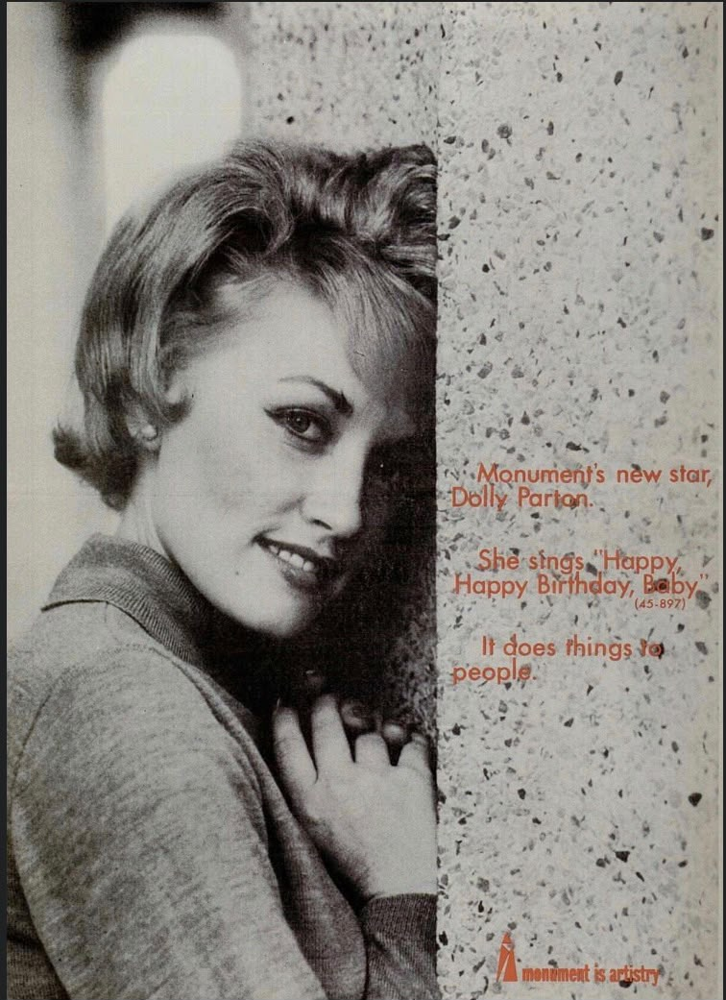

Music & Songwriting
A celebrated singer and songwriter whose music became part of the cultural fabric of generations of listeners.
HER LIFE & LEGACY
January 19, 1946 — August 25, 2026
HER BEGINNINGS
Dolly Parton's story is one of extraordinary talent, perseverance and an enduring connection with people around the world.
Born on January 19, 1946, she grew from humble beginnings into one of the most recognizable and influential figures in music and entertainment.
Through decades of work, her distinctive voice, songwriting and storytelling became a defining part of her remarkable career.
HER ACHIEVEMENTS
Throughout her life and career, Dolly achieved extraordinary milestones while continuing to inspire millions of people.
A celebrated singer and songwriter whose music became part of the cultural fabric of generations of listeners.
Her career expanded beyond music into film, television and other areas of entertainment.
Her charitable work and commitment to literacy became an important part of the legacy she leaves behind.
Through her work and generosity, she inspired people across generations and around the world.
HER LEGACY
Dolly Parton's influence extends far beyond the stage. Her music, storytelling, generosity and distinctive personality created a legacy that will continue to be remembered.
She leaves behind memories cherished by family, friends, fans and countless people whose lives were touched by her work.

Her memory lives on through the lives she touched.
Private Funeral Invitation